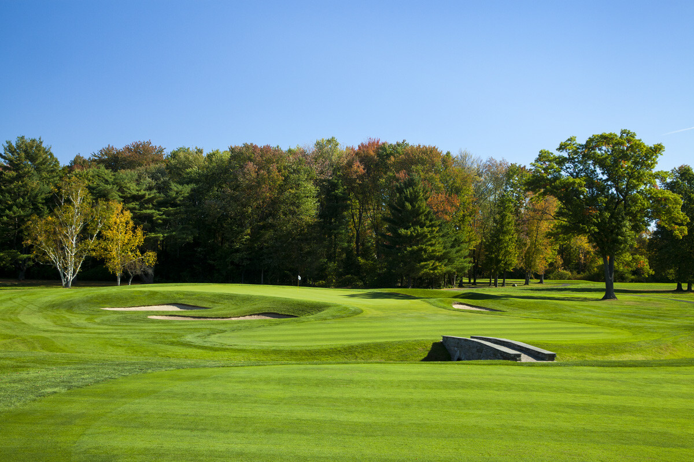
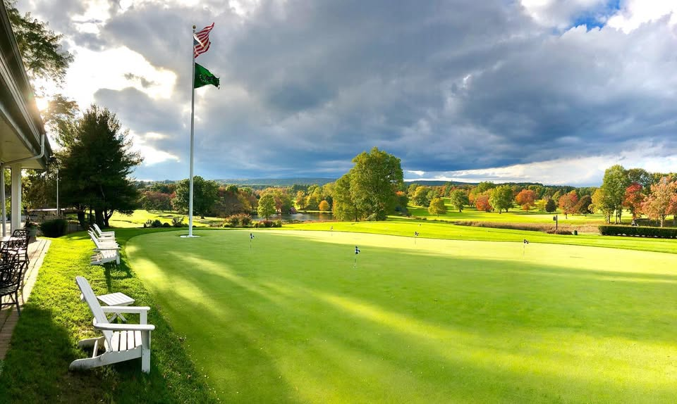
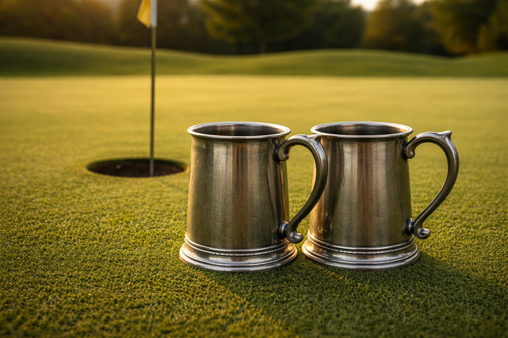

Hartford Golf Club
HGC fairway.
Golf's Greatest Test. Two clubs. Two teams. Thirty-six holes. One pair of chalices.
Hartford Golf Club meets Wampanoag Country Club in a one-day, 36-hole marathon to determine the champion of private golf in West Hartford. Inaugural edition: Summer 2026.

The Hartpanoag Classic is a one-day, 36-hole golf tournament where teams from Hartford Golf Club and Wampanoag Country Club face off in a golf marathon to determine the champion of private golf in West Hartford.
The inaugural Hartpanoag Classic is scheduled for Summer 2026 and will see two teams of two members each facing off in a battle of golf endurance and pride. Two 18-hole matches will be played: one in the morning at one club, and one in the afternoon at the other — alternating each year.


A full day of competitive golf, camaraderie, and tradition.
| Time | Event |
|---|---|
| 7:30 AM | Breakfast sandwiches provided by the losing team of the previous year |
| 7:31 AM | Range and putting green warm-up |
| 8:00 AM | Match 1 tees off at Club 1 |
| 12:30 PM | Lunch at Club 1 |
| 2:00 PM | Match 2 tees off at Club 2 |
| ~6:00 PM | Presentation of the Championship Chalices |
| 6:15 PM | Dinner and drinks at Club 2 |
Unlike traditional trophies that sit in a glass case, the Hartpanoag chalices belong to the winners — one for each member of the victorious team — to display, drink from, and defend until the following year's Classic.

Two storied private clubs. One rivalry.
One of Connecticut's most prestigious private clubs, Hartford Golf Club has a rich history of competitive golf and tradition. HGC brings its storied pedigree to the Hartpanoag Classic.
A Donald Ross-designed masterpiece in West Hartford, Wampanoag Country Club is known for its challenging greens and timeless layout. Wamp brings course knowledge and home field advantage.
The Hartpanoag Classic is set to begin its storied history in Summer 2026. Results will be recorded here for posterity.
| Year | Champions | Club | Match 1 Result | Match 2 Result |
|---|---|---|---|---|
| 2026 | To be determined | — | — | — |
Photos from the Classic will appear here after the inaugural event.
HGC fairway.

A Donald Ross original.

The prize awaiting the 2026 champions.